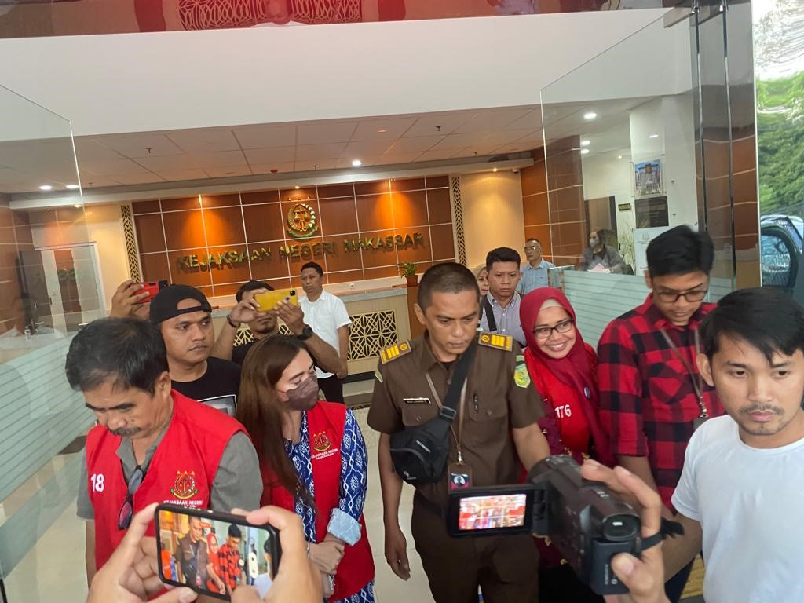

LibNews.com
Amanda Dea Agustin - 11210251000009 - 5A IPI
sumber: kompas.com
Makassar, 02 Oktober 2023. Kasus korupsi kini kian masih berlanjut, bahkan sampai pada lingkungan perpustakaan Kota Makassar menjadi sorotan publik setelah seorang pelaku wanita berhasil ditangkap oleh Tim Penyidik Intelijen Kejari di Kejaksaan Negeri Makassar.
Pelaku tersebut bernama Ridhana yang sebelumnya berstatus Daftar Pencarian Orang (DPO) akhirnya berhasil diamanankan setelah berbulan-bulan dalam pengejaran.
Menurut informasi yang dihimpun, kasus ini terkait dengan dugaan penyalahgunaan dana di sebuah perpustakaan di Kota Makassar yaitu menggunakan anggaran untuk pembagian Gedung Perpustakaan tahun 2021.
Pelaku, yang diketahui sebagai Ridhana ini menjabat sebagai Bendahara di perpustakaan tersebut, diduga telah melakukan penyelewengan dana perpustakaan dalam jumlah yang cukup besar.
Sebelum Ridhana berhasil diamankan, ia bahkan sempat bersembunyi di rumah calok suaminya yang berinisial AL dari tempat persembunyiannya di atas plafon rumah nya yakni di Bumi Pallangga Mas, Kabupaten Gowa, dini hari. (Kamis, 21/9/2023)
Kepala Kejaksaan Negeri Andi Sundari mengatakan, Tersangka Ridhana sempat menjadi buron dan dijadikan DPO selama dua minggu.
Kemudian Penetapan DPO itu dilakukan, karena tersangka telah dipanggil secara patut, namun tidak penuhi panggilan penyidik,
ungkap Andi Sundari.
Saat ini pelaku terjerat, Undang-undang No. 20 tahun 2001 tentang Pemberantasan Tindak Pidana Korupsi
dengan nilai anggaran sebesar Rp 7.988.363.000 dan Kerugian Negara ini berkisar mencapai penghitungan sebesar Rp 662.650.072 dari BPKP Provinsi Sulawesi Selatan.

sumber: caritau.com
Andi menyampaikan dalam jumpa pressnya Penyidik telah memiliki minimal 2 alat bukti yang sah untuk menetapkan tersangka Sehingga Ridhana saat ini ditetapkan sebagai pelaku. Ada 3 orang lainnya yang dijadikan tersangka yakni Kepala Dinas Perpustakaan Kota Makassar Tenri A. Palallo (Kepala dinas Perpustakaan Makassar), Ir. Mustakim (Direktur CV. Era Mustika), dan Ridhana (pihak perusahaan CV. Era Mustika) dalam pembangunan gedung perpustakaan Kota Makassar tahun anggaran 2021.
ujar Andi (19/05/2023)
Selanjutnya, pelaku akan menjalani proses hukum sesuai dengan ketentuan yang berlaku dan saat ini kerjasama tersebut telah dinyatakan putus kontrak dan pembangunan gedung perpustakaan tidak berjalan lagi 100%. Kejaksaan Negeri Makassar akan memastikan bahwa pelaku mendapatkan keadilan dan masyarakat dapat melihat tindakan tegas dalam menangani kasus korupsi yang merugikan pendidikan.
Kasus ini juga menjadi peringatan bagi seluruh instansi pemerintah dan lembaga publik untuk selalu menjaga integritas dan transparansi dalam pengelolaan dana publik. Kejaksaan Negeri Makassar akan terus bekerja keras dalam menindak pelaku korupsi demi menciptakan tata kelola keuangan yang baik dan berintegritas di seluruh daerah.
Baca artikel selengkapnya:Klik disini
Tugas3 by:
Nama : Amanda Dea Agustin (11210251000009)
Kelas: 5A IPI - UIN Syarif Hidayatullah Jakarta
Mata Kuliah: Pengembangan Web
Dosen Pengampu: Pak Muhammad Azwar., S.Pd., M.Hum
{kind=link}
{kind=link}